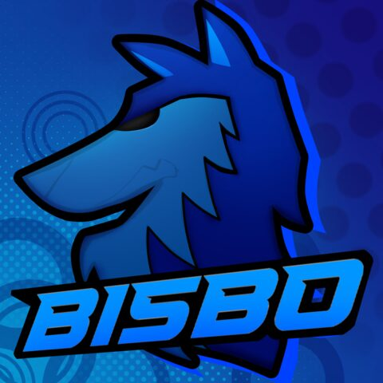

KILLSTREAK
A top-down 1v1 tactical shooter where the map is always visible but the opponent is not: a vision cone decides what either player can actually see.
Godot 4, GDScript · 2026, in progress
Game developer. Gameplay and engine programming, mostly in Unreal Engine 5 and C++, and more and more the design work on top of it: deciding what a player should know, and when.

Hey, I'm Chris, or Bisbo. I'm a game dev from Athens, Greece, finishing my CS degree at UC San Diego in , and looking for a role on a game team starting .
A top-down 1v1 tactical shooter where the map is always visible but the opponent is not: a vision cone decides what either player can actually see.
Godot 4, GDScript · 2026, in progress
A physically based renderer built from scratch over a quarter, extended to render fog, haze and light shafts without biasing the estimator.
C++, OpenMP · Spring 2026
A poker app that also works as an engine, so players can make their own custom games and then play them.
Private project · 2026